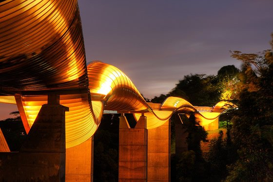
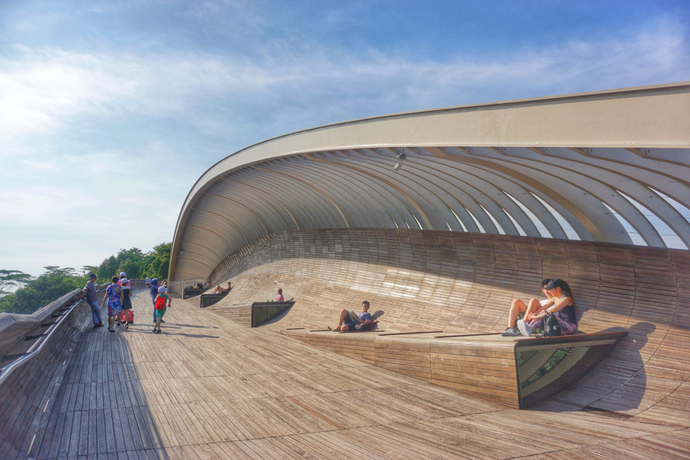

Henderson Waves is a 274-metre long bridge known for its iconic design mirroring undulating waves. You can take a nice stroll or jog while enjoying the scenic skyline. This charming, wood-panelled bridge was built to improve connectivity between nature areas. A series of seven undulating “ribs” double up as alcoves and provide shelter. At night, you will be treated to a magnificent sight as the wave structure is lit up by LED lights.
Henderson Waves is also an ideal spot for viewing migratory birds of preys, such as the Brahminy Kite (Haliastur indus), raptors and other winter visitors, from atop the bridge. The sheltered alcoves also provide a nice resting spot for you to hydrate before continuing on your journey!

Difficulty level: easy
Distance: 0.3km
Duration: 10min